Material didáctico: Órden dórico
Comenzamos por añadir un cilindro (Añadir/Malla/Cilindro) sin los vértices de las tapas y con 24 vértices.
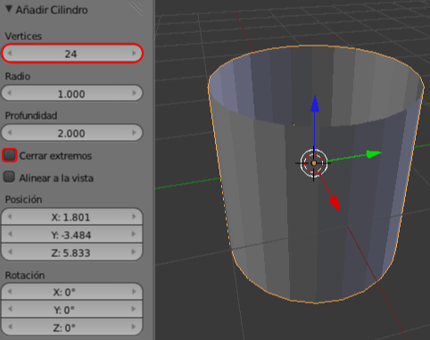Tras los escalados necesarios esto es lo que tenemos para comenzar a trabajar.
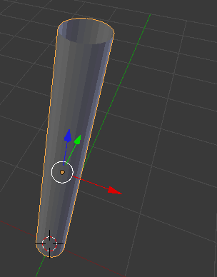
Pasamos a Modo Edición  y añadimos un par de bucles ("Control R") cerca de los extremos.
y añadimos un par de bucles ("Control R") cerca de los extremos.
Los dos bucles de arriba deben sufrir un escalado ("S") para conseguir una disminución del ancho de la columna según aumenta en altura.
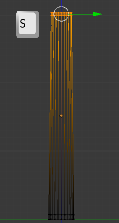
Del bucle de facetas del medio seleccionamos las caras  de un modo alterno (quedarán seleccionadas 12 caras).
de un modo alterno (quedarán seleccionadas 12 caras).
Es el momento de aplicar una extrusión individual hacia el interior de la columna. Esta extrusión será muy corta. Como más adelante le aplicaremos al objeto un modificador de Subdivisión sabemos que nos viene muy bien tener bucles cerca de las esquinas, por lo tanto esta primera extrusión en realidad es para crear esos bucles.
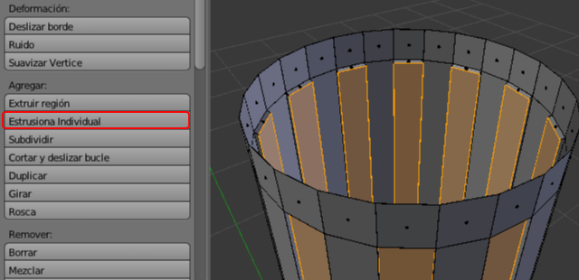Repetimos la misma operación para ganar profundidad.
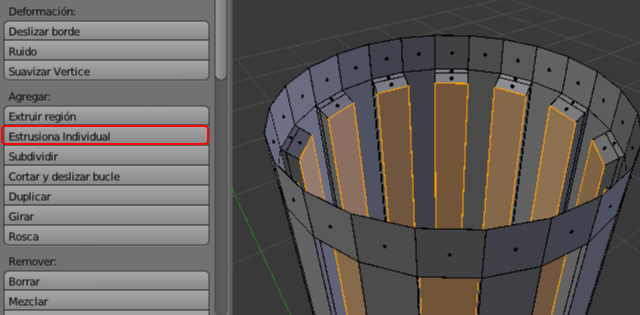Estamos listos para seguir editando con el modificador Subdivisión (con un nivel de Vista:2) así como con la opción de sombrado Suave habitual.
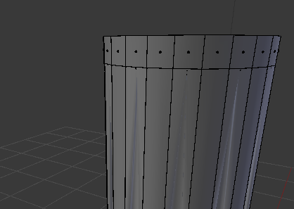Presenta un aspecto interesante. Pero para que mejore considerablemente necesitamos un par de bucles cercanos (Control_R") a aquellos que ya añadimos antes. Los situaremos para que el remate de la estría acabe en semicircunferencia (más o menos) tanto en la base de la columna como en la parte alta.
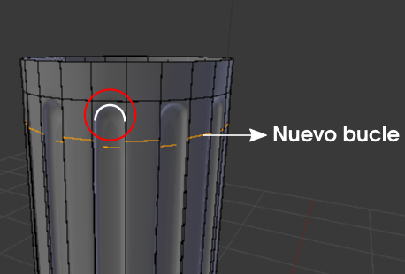El resto de los elementos que conforman la columna no deberían suponer un problema a estas alturas. Continuamos por arriba con extrusiones nulas "E+Intro" y su correspondiente escalado y/o desplazamiento hacia arriba hasta completar con el equino.
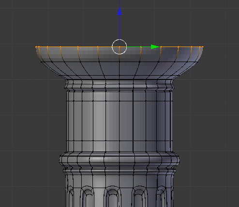El ábaco lo hacemos con un nuevo objeto, un simple cubo. Lo correcto sería hacerlo salir a escena en la posición adecuada usando las adherencias, por ejemplo:
- Seleccionamos el último bucle tal y como muestra la imagen anterior
- Hacemos Malla/Adherencia/Cursor a seleccionado. Con eso se sitúa el Cursor 3D en un buen lugar para garantizar la correcta alineación.
- Sacamos a escena desde Modo Objeto
 el cubo (Añadir/Malla/Cubo) y lo escalamos ("S").
el cubo (Añadir/Malla/Cubo) y lo escalamos ("S").
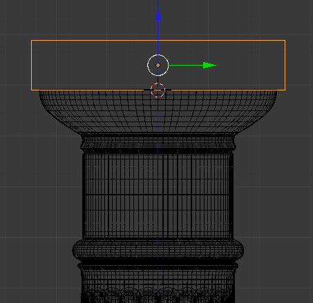
Un render de la zona del capitel tendría este aspecto.
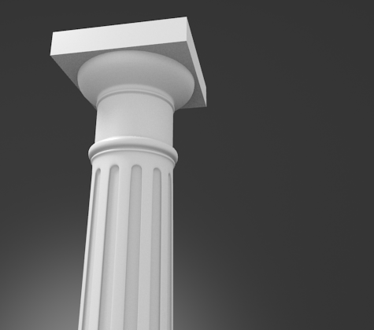La parte de la basa no es en absoluto diferente; más extrusiones nulas ("E+Intro") hasta completar el diseño.
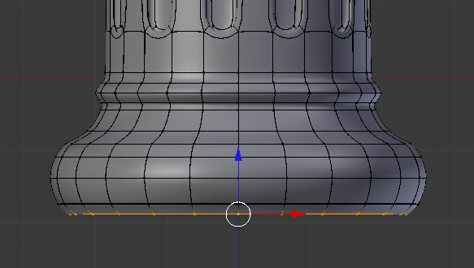El plinto puede ser un duplicado ("Shift-D") del ábaco con un ligero escalado ("S").
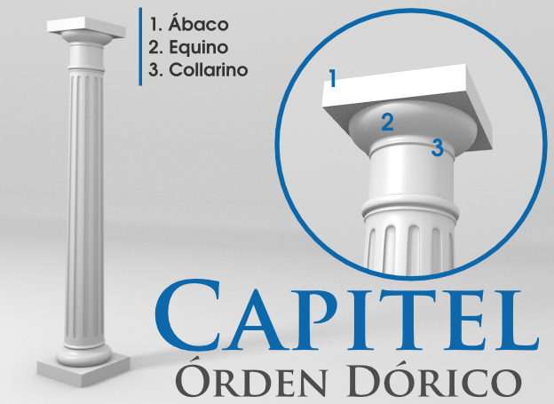